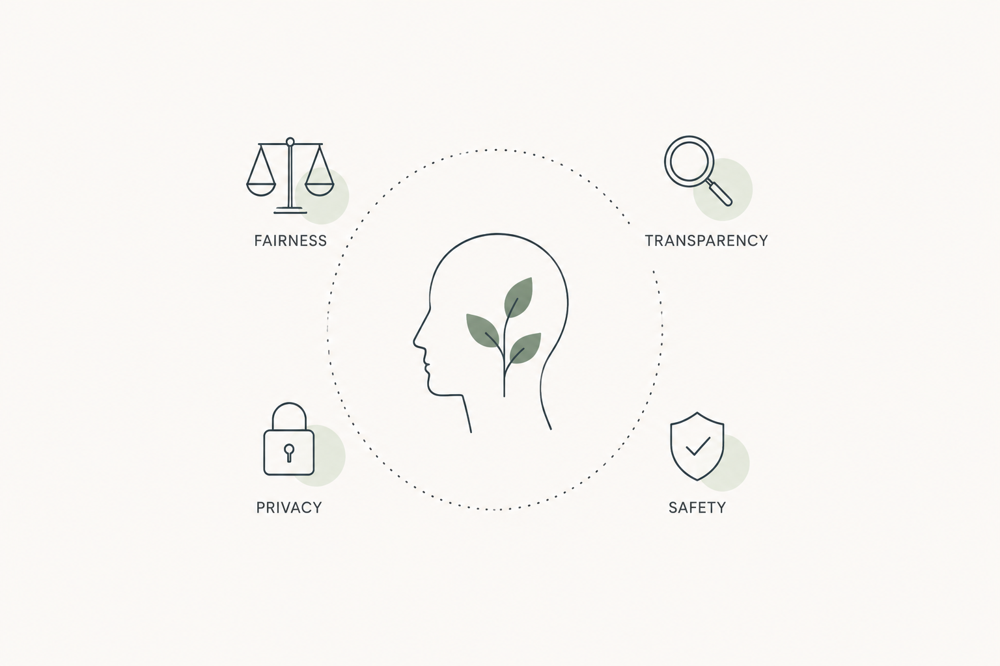
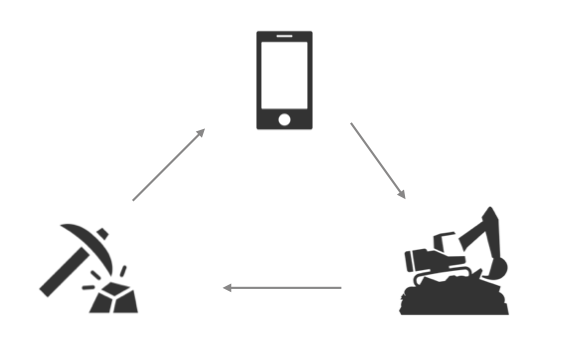
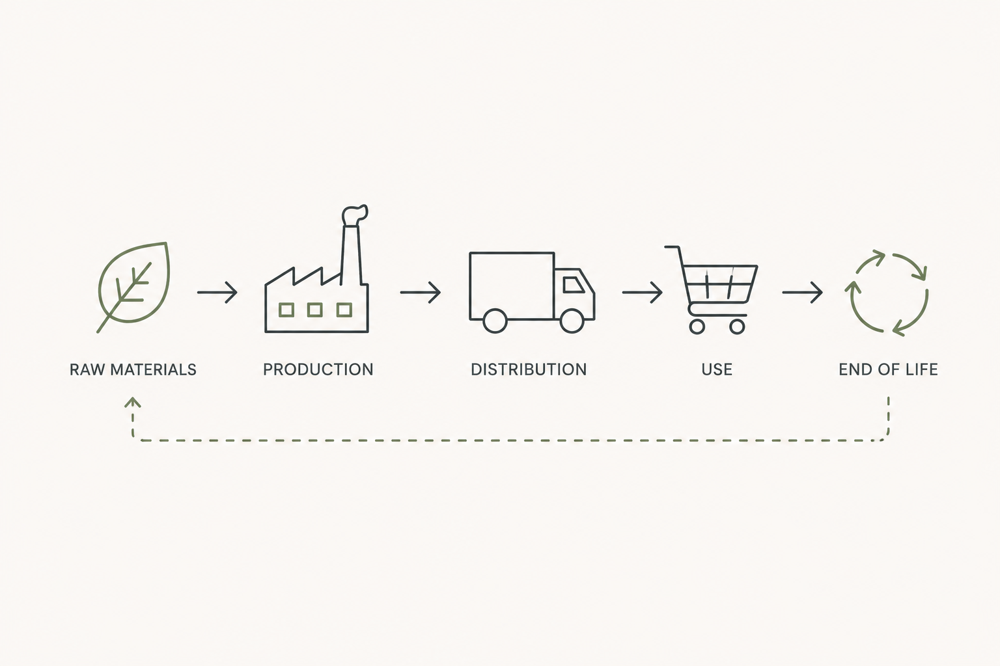

Responsible AI & sustainability
Evaluating sustainability-related risks and opportunities in generative AI, including practical approaches to testing and risk mitigation for enterprise applications.
I study the environmental implications of emerging technologies and develop methods to support more responsible decisions across AI, semiconductors, and digital products.

Evaluating sustainability-related risks and opportunities in generative AI, including practical approaches to testing and risk mitigation for enterprise applications.

Connecting digital activity to the infrastructure, resource demands, supply chains, and emissions that make it possible.

Applying life-cycle assessment and systems thinking to electronics, semiconductor manufacturing, circularity, and technology supply-chain decarbonization.
Examples of research questions, methods, and published work connecting sustainability science with digital technology.
How can organizations evaluate and manage risks when using generative AI for sustainability applications? This work presents decision-oriented approaches to testing, evaluation, and mitigation.
Read publication ↗How do digital activities connect to physical infrastructure and environmental impacts? This research examines the supply-chain connections between digital use, production systems, resource demand, and emissions.
Read publication ↗How can the environmental impacts of multifunctional information and communication technology products be compared meaningfully? This research explores a functionality-based life-cycle assessment approach.
Read publication ↗A decision-oriented approach to testing, evaluating, and mitigating risks in enterprise sustainability applications.
A framework connecting everyday digital activity with production systems, resource use, and emissions.
A user-centered method for comparing multifunctional technology products based on the services they provide.